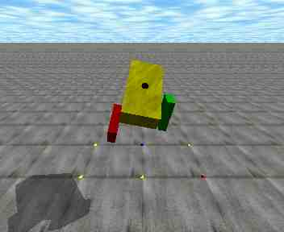
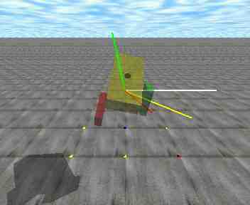

|  |  |
| 捻っている所 | 角運動量を表示 |
捻りの物理を理解するために人間を単純化したシミュレータです。 Open Dynamics Engine(ODE)に付いていた サンプルプログラムを適当に書き換えて作っただけの、いい加減なプログラムです。 要望、質問等は、私のブログに お願いします。
実行ファイルには、Windows用とLinux用とがあります。実行ファイルとは 別にテクスチャーファイルが必要です。テクスチャーファイルは、 車輪シミュレータにも 共通して使えます。テクスチャーファイルが正しい場所にないとき は、"Error: Can't open image file ..."という エラーが出ます
| hineri-0_3-linbin.lzh | Linux用実行ファイル |
| hineri-0_3-winbin.lzh | Windows用実行ファイル |
| textures.lzh | テクスチャー ファイル。Windows, Linux共通。解凍してできるtexturesディレクトリを 実行ファイルと同じディレクトリに置いて下さい |
| gym_sim-0_4.lzh | ソースファイル。車輪 シミュレータのソースも入ってます。実行ファイルを自分で作るときに利用して下さい |
Windows版は、実行ファイルをダブルクリックするだけです。
Linux版は、コマンドラインから実行する時に以下のオプションを指定できます:
-notex-noshadow
-framestep <n> (Linux専用)
Ctrl-xCtrl-tCtrl-sCtrl-v (Linux専用)ソースファイルからコンパイルする場合には、ODE と、OpenGLが必要です。
Makefile先頭の、ODE_DIRの部分を、ODEをビルドしたディレクトリ
に書き換えて、makeして下さい。車輪シミュレータも同時に
作られます。
-framestepオプションを指定できるようにした(Linux)。